1과목: 시각디자인론
1. 일러스트레이션에 대한 설명 중 틀린 것은?
2. 다음 중 디자인보호법에 관한 일반적 설명으로 틀린 것은?
3. 아이디어 발상의 창조적 기법 중 하나인 유추법(Synectics)과 관련이 없는 것은?
4. 기업경영에는 제품 등의 4가지 요소를 포함하는 마케팅계획이 필요하다. 이 4개의 요소는 각각 독립적이면서도 서로 연결과 상호지원이 필요함을 나타내는 용어는?
5. TV 광고에서 프로그램과 프로그램 중간에 삽입되는 광고는?
6. 디자인의 분류가 아닌 것은?
7. 다음 중 옥외광고에 해당되는 것은?
8. Green Marketing의 개념과 가장 거리가 먼 것은?
9. 상표등록시 등록절차가 맞는 것은?
10. 엉뚱한 발상과 비상식적인 표현으로 강한 인상을 남기는 시각표현 수법은?
11. 아르누보(Art Nouveau)에 관한 설명 중 옳은 것은?
12. 디자인 권리 확보 및 경쟁사 모방으로 부터의 방어를 목적으로 디자인출원이 이루어지는 과정은?
13. 자연미에 대한 설명으로 적합하지 않는 것은?
14. 컴퓨터에 그림이나 도형의 위치관계를 부호화하여 입력하는 장치로서 절대좌표를 표시할 수 있는 가장 적절한 것은?
15. 19세기의 초기 도입단계의 사진 및 사진 제판술의 보급과 발전이 당시의 일러스트레이터에게 미친 영향은?
16. 1944년 윌리엄 고든에 의해 개발된 것으로, 서로 관련이 없어 보이는 것들을 조합하여 새로운 것을 도출해내는 아이디어 발상법은?
17. 아이디어 발상 시 고려해야할 사항 중 가장 거리가 먼 것은?
18. 다음 중 상표의 기능이 아닌 것은?
19. 계층구조는 복잡한 관계를 시각화하고 이해하는데 필요한 가장 단순한 구조이다. 이에 해당하지 않은 것은?
20. 심벌의 아이솔레이션(isolation) 범위를 규정하는 주된 이유는?
2과목: 조형심리학
21. 도형의 중심선을 표시하는 데 사용되는 선은?
22. 다음 중 군화(Grouping) 법칙에 대한 요소로 틀린 것은?
23. 다음 중 지각항상성(perceptual constancy)과 무관한 것은?
24. 다음 중 다각 투시도법으로 인물과 대상물을 표현했던 미술은?
25. 다음 그림은 무엇을 하기 위한 작도인가?
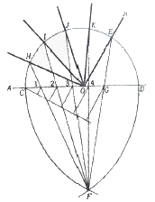
26. 그림 윗쪽 수평선이 아래쪽의 수평선 보다 길어 보이는 착시는?
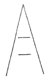
27. 바탕에 대해 도형이 되기 쉬운 조건에 해당하지 않는 것은?
28. 디자인의 조건 중 감성소비시대에 특히 주목받는 가치는?
29. 사람의 눈에 원추체가 밀집해 있는 곳을 지칭하는 말은?
30. 점에 대한 기하학적인 정의가 가장 올바른 것은?
31. 그림과 같은 평면도법은?
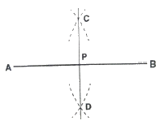
32. 보이지 않는 부분을 표시하는 선은?
33. 미(美)와는 대립되지만, 미를 부각시켜주며 그와 더불어 논의되어 온 것은?
34. 일직선 상에 하나의 원이 굴러갈 때 그리는 다음 그림과 같은 곡선은?
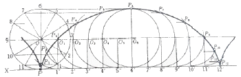
35. 항상성의 정도가 달라지기 위한 조건에 해당되지 않는 것은?
36. 두 눈이 물체를 볼 때 두 눈 사이의 거리만큼 약간 다른 시야를 보게 되는 데서 일어나는 현상은 무엇인가?
37. 아래 그림에서 사각형 안의 6개의 선들이 3개의 그룹으로 보일 때 이것은 군화의 법칙 중 어디에 해당 되는가?
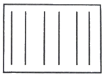
38. 시각적 질감을 설명한 것 중 옳은 것은?
39. 리듬에 있어서 가장 기본적인 조건은?
40. 아래 그림의 작도법은?
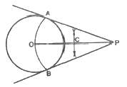
3과목: 광고학
41. 다음 중 매스커뮤니케이션 과정의 요소에 속하지 않는 것은?
42. 광고의 설득적 기능에 해당되지 않는 것은?
43. 광고에 크리에이티브 콘셉트를 구상하는데 있어서 토렌스의 창조적 사고 요소가 아닌 것은?
44. 광고, DM, 판매촉진, PR 등 다양한 커뮤니케이션 수단들의 전략적인 역할을 비교, 검토하고, 명료성과 일관성을 높여 최대한의 커뮤니케이션 효과를 제공하기 위해 이들 다양한 수단을 통합하는 총괄적 계획은?
45. TV광고 아이디어를 구체화하고 광고주에게 크리에이티브 아이디어를 설명할 때 광고주의 이해를 돕기 위해 작성하는 것은?
46. 배너 광고의 단점을 해결하기 위해 배너에 멀티미디어 효과를 첨부시킨 광고는?
47. 인터넷 마케팅의 정의가 아닌 것은?
48. 마케팅(Marketing)의 정의는?
49. 매체를 이용한다는 점과 비대면적인 점은 광고와 동일하나, 비용을 지불하지 않고 내용이나 표현이 완벽하게 통제될 수 있으며 광고보다 신뢰도가 높아 수용자의 경계심도 타파할 수 있는 것은?
50. 광고회사의 관련부서가 아닌 것은?
51. 다음 중 티저(teaser) 광고에 대한 설명은?
52. 마케팅 목표로서 가장 적합한 예는?
53. 특정한 수단을 통하여 무엇인가 있는 사실을 전달함으로써 많은 사람들의 행동을 일정한 방향으로 진행시키고자 하는 계획적인 활동은?
54. 광고메시지 표현계획을 마련할 경우, 완성된 상품콘셉트(concept)를 효율적인 커뮤니케이션 콘셉트로 바꾸는 것을 의미하는 것은?
55. 대화의 형식을 갖춘 의미의 전달을 뜻하며 전달자는 동시에 수용자의 역할, 수용자는 동시에 전달자의 역할을 하는 커뮤니케이션 방법은?
56. 광고물의 제작은 다음 중 어느 전략과 가장 직접적인 관련을 맺고 있는가?
57. 다음 중 소비자 행동에 영향을 주는 요인과 가장 거리가 먼 것은?
58. 다음 중 실사법(實査法)의 방법이 아닌 것은?
59. "문제를 해결하고 기회를 살리기 위해서는 어떠한 층의 소비자 Needs를 어떤 형으로 상품화 할 것인가?" 하는 문제에 직면하게 된다. 이처럼 상품을 구매하여 사용해 주기를 바라는 소비자를 무엇이라고 부르는가?
60. DM(Direct Mail)의 특성이 아닌 것은?
4과목: 색채학
61. 물체의 색을 지각하는 것은 빛의 어떤 성질과 가장 관계가 깊은가?
62. 다음은 빨강, 노랑, 초록, 파랑의 분광분포 곡선이다. 노랑(Yellow)의 분광분포 곡선은?
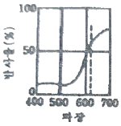
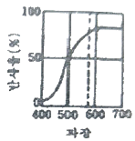
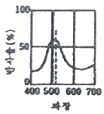
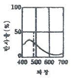
63. 컬러인화사진은 대부분 어떤 혼색방법을 이용한 것인가?
64. 비트(bit)에 알맞은 내용이 아닌 것은?
65. CIE 색도도에 관한 설명 중 틀린 것은?
66. 무거운 상품을 가볍게 보이기 위해 포장하려 한다면 색의 어떤 속성을 조정해야 하나?
67. 문,스펜서의 면적효과에 관한 설명 중 틀린 것은?
68. 다음 중 강함, 동적임, 화려함 등을 느낄 수 있는 배색은?
69. 저드(D.M. Judd)의 색채조화론 중 다음 내용이 설명하는 것은?
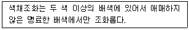
70. 단색광과 파장의 범위가 틀리게 짝지어진 것은?
71. 디자인의 대상이나 용도에 적합한 배색을 적용하고 기능적으로나 심미적으로 효과적인 배색효과를 얻을 수 있도록 미리 설계하는 것은?
72. 다음 중 난색계의 특징으로 틀린 것은?
73. 다음 중 회전 혼합과 관계가 없는 것은?
74. 횃불놀이, TV 나 영화 등에서 나타나는 색의 현상은?
75. 다음 중 가장 가벼운 느낌을 주는 배색은?
76. 오스트발트(Ostwald) 표색계에 관한 설명 중 틀린 것은?
77. 아파트 건축물의 색채 기획 시 고려해야 할 사항이 아닌 것은?
78. 비렌(Birren)의 색과 형의 연결로 틀린 것은?
79. 색광을 표시하는 표색계로 심리적이고 물리적인 빛의 혼색 실험결과에 그 기초를 두는 것은?
80. 다음 중 색광의 표시법과 관련 있는 것은?
5과목: 사진 및 인쇄제판론
81. 다음 중 피사계심도를 깊게 하는 방법과 가장 거리가 먼 것은?
82. 스캐너 사용시 원고드럼 표면과 슬라이드 사이에서 수분의 영향으로 생기는 무지개 모양의 간섭무늬로 습도가 높으면 심하게 발생하는 현상은?
83. 달리고 있는 자동차의 역동감을 표현하기 위한 가장 적절한 촬영 기법은?
84. 네거티브의 농도가 밝게 만들어 인화했을 때 어두운 사진이 되면 콘트라스트가 많이 떨어지는 현상은?
85. 35mm 필름을 상요하는 카메라에서 앞뒤로 배치된 물체의 상대적 크기가 가장 정상적으로 보이게 하는 렌즈의 초점거리는?
86. 인쇄기계를 가압방식에 따라 분류할 때 해당되지 않는 방식은?
87. 인쇄물에 각각 다른 문자, 사진 등 인쇄물의 내용을 바꾸어 인쇄할 수 있고, 필요한 매수를 즉시 인쇄할 수 있는 방법은?
88. 평판의 판재가 갖추어야 할 조건으로 틀린 것은?
89. 흑백 현상액의 산화방지를 위해 사용하는 약품은?
90. 은 화상 일부 또는 전부를 여러 가지 은 화합물을 바꾸거나 은 이외의 금속이나 금속 화합물 또는 색소를 바꾸어 특수효과를 내는 처리과정은?
91. 같은 높이의 판면으로 화학적인 원리에 의해 제판되는 판은?
92. 일정한계 이상의 외력에 의해 변형이 되고, 그 이후부터 외력과 유동 속도가 비례하는 것을 나타내는 것은?
93. 상품 촬영시 유리에 반사되는 빛을 제거하기 위하여 사용하는 필터는?
94. 인쇄 판면이 유연하여 탄력이 있으므로 종이나 헝겊처럼 유연한 소재뿐만 아니라 유리, 금속을 비롯한 딱딱한 판자나 성형물의 면에 대해서도 접착인쇄를 할 수 있는 인쇄 방식은?
95. 1/60초 F/11이 적정노출이었다면 같은 조건하에서 셔터속도를 1/250초 변경한다면 적정 조리개 수치는?
96. 감광재료의 구조에서 유제를 마찰 등의 손상에서 보호하는 동시에 유제의 보존성 향상과 흐림 방지의 역할을 하는 투명 젤라틴 막의 엷은 층은?
97. 사진 촬영시 1/125초, f/8이 적정 노출이라고 할 때 다음 중 노출량이 같은 조건이 것은? (단, 다른 조건은 동일하다.)
98. 흑백필름으로 동백의 빨간 꽃잎을 밝게 묘사하려면 어떤 색의 필터를 사용해야 하는가?
99. 제지공정에서 섬유를 층으로 펴서 물을 탈수시키는 공정은?
100. 다음 인쇄판 형식 중 그라비어 인쇄는 어떤 형식에 속하는가?